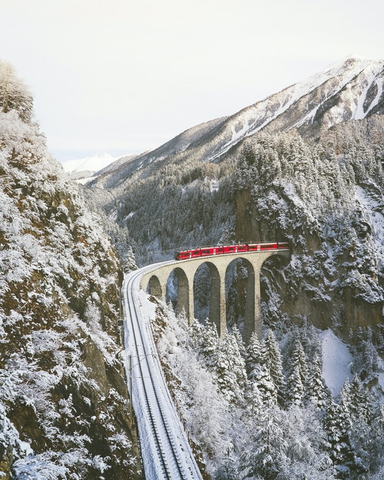
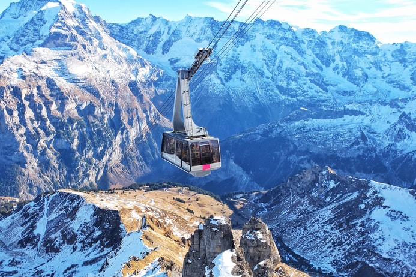

As one of the alpine countries, landlocked Switzerland with her mountains has to compete not only with her neighbours but with other destinations. There are, e.g., no coastal resorts.
The advantage is that tourism in Switzerland benefits of a large diversity of beautiful landscapes in a relatively small space.



Disclaimer
The COVID-19 pandemic has dealt a severe blow to the tourism business in Switzerland. Although it is a minor position in the Swiss export balance, it is nevertheless of considerable importance for those regions of the country that attract domestic and foreign visitors. As a consequence of the lockdown measures, combined with close borders and travel bans, tourism collapsed and only briefly and partly recovered in summer. Its future is uncertain and depends on people’s (future guests’) attitudes and decisions as much as on the economy, political measures and, of course, the progress of the pandemic.
 Let's build a community
Let's build a community